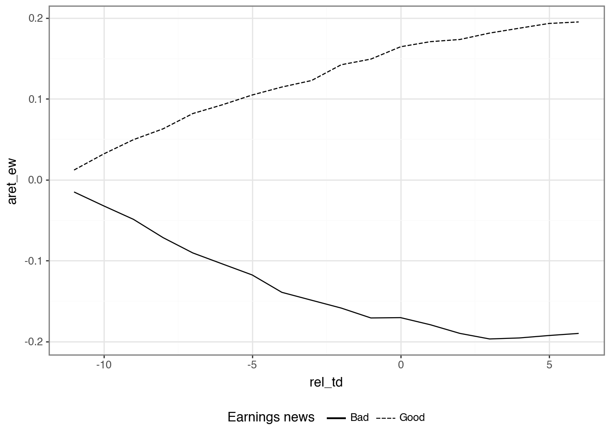

![]()
import io
import re
import zipfile
import requests
import polars as pl
from era_pl import (load_parquet, NumberedLines,
plotnine_star as p9, ptime)Ball and Brown (1968): Replication using Python Polars
Accounting research
Replication
Python
Keywords
Python, Polars, Accounting research
1 Ball and Brown (1968)
In this note, I focus on Ball and Brown (1968), one of the first winners of the Seminal Contributions to Accounting Literature Award.1
Ball and Brown (1968) won the inaugural Seminal Contribution to the Accounting Literature Award with a citation: “No other paper has been cited as often or has played so important a role in the development of accounting research during the past thirty years.” However, Philip Brown (Brown, 1989) recalled in a presentation to the 1989 JAR conference that the paper was rejected by The Accounting Review with the editor indicating a willingness to “reconsider the manuscript if Ray and I wished to cut down the empirical stuff and expand the ‘bridge’ we had tried to build between our paper and the accounting literature.” (Brown, 1989, p. 205)
According to Kothari (2001, p. 113), “Ball and Brown (1968) and Beaver (1968) heralded empirical capital markets research as it is now known.” Prior to that period, accounting research was a largely theoretical discipline focused on normative research, that is, research concerned with the “right” or “best” way to account for various events and transactions. In addition to being normative, accounting theory was largely deductive, meaning that detailed theories were derived from general principles.
Beaver (1998) identifies one approach as asking, say, “what properties should the ‘ideal’ net income have?” One answer to this question is that accounting income for a period should reflect the change in the net present value of cash flows (plus cash distributions) to shareholders during the period. But other answers existed. Accounting researchers would start with a set of desired properties and use these to derive the “best” approach to accounting for depreciation of long-lived assets, inventory, or lease assets. Kothari (2001) points out that there was “little emphasis on the empirical validity” of theory.
Similar ideas still permeate the thinking of standard-setters, who purport to derive detailed accounting standards from their “conceptual frameworks”, which outline broad definitions of things such as assets and liabilities that standard-setters can supposedly use to derive the correct accounting approach in any given setting.
However, in the period since Ball and Brown (1968), these approaches have been largely discarded in academic research. A largely normative, theoretical emphasis has been replaced by a positive, empirical one.
I use Ball and Brown (2019) as a kind of reading guide to Ball and Brown (1968) before considering a replication of Ball and Brown (1968) styled on that provided by Nichols and Wahlen (2004).
Tip
The Python code in this note uses requests, polars, era-py, db2pq, and plotnine.
If you are using pip, you can install the required packages with:
pip install requests polars "era-py[polars]" db2pq plotnineThe imports below load the packages used throughout the note. More general setup instructions will be provided in Chapter 1 of the book. Quarto templates for the exercises below will be made available on GitHub.
Note
The package era_pl is found on PyPI as era_py. Here era stands for Empirical Research in Accounting and pl is the conventional abbreviation for Python Polars. Hosting the era_pl functions in era-py allows for a separate non-Polars Python version of the book without maintaining two packages.
1.1 Principal results of Ball and Brown (1968)
The first two pages of Ball and Brown (1968) address the (then) extant accounting literature. This discussion gives the impression that the (academic) conventional wisdom at that time was that accounting numbers were (more or less) meaningless (“the difference between twenty-seven tables and eight chairs”) and further research was needed to devise more meaningful accounting systems.
Arguably this notion informs the null hypothesis of Ball and Brown (1968). If accounting numbers are meaningless, then they should bear no relationship to economic decisions made by rational actors. Ball and Brown (1968) seek to test this (null) hypothesis by examining the relationship between security returns and unexpected income changes. Ball and Brown (1968) argue that “recent developments in capital theory … [justify] selecting the behavior of security prices as an operational test of usefulness.”
The evidence provided by Ball and Brown (1968) might not convince critics of the usefulness of adding chairs and tables unless the market is a rational, efficient user of a broader set of information. There are explanations for the results of Ball and Brown (1968) that do not rely on such rationality and efficiency. First, the market might react to “twenty-seven tables less eight chairs” because it does not know what it is doing. Second, the market might know that “twenty-seven tables less eight chairs” is meaningless, but has no better information to rely upon. Given the arguments they seek to address, assumptions that the market is (a) efficient and (b) has access to a rich information set beyond earnings seem implicit in the use of security returns in a test of usefulness.
Ball and Brown (2019, p. 414) identify three main results of Ball and Brown (1968): “The most fundamental result was that accounting earnings and stock returns were correlated. … Nevertheless, annual accounting earnings lacked timeliness. … After the earnings announcement month, the API (which cumulated abnormal returns) continued to drift in the same direction.”
Figure 1 of Ball and Brown (1968) depicts the data provided in Table 5 and comprises all three of the principal results flagged by Ball and Brown (2019).
The returns reported in Figure 1 of Ball and Brown (1968) are not feasible portfolios because the earnings variables used to form each portfolio at month \(-12\) are not reliably available until month \(0\) or later. Yet one can posit the existence of a mechanism (e.g., a time machine or a magical genie) that would suffice to make the portfolios notionally feasible. For example, if a genie could tell us whether earnings for the upcoming year for each firm will increase or decrease at month \(-12\), we could go long on firms expecting positive news, and go short on firms expecting negative news.2 Note that this hypothetical genie is sparing with the information she provides. For example, we might want further details on how much earnings increased or decreased, but our genie gives us just the sign of the earnings news.
Additionally, we have implicit constraints on the way we can use this information in forming portfolios. We might do better to adjust the portfolio weights according to other factors, such as size or liquidity, but the portfolios implicit in Figure 1 of Ball and Brown (1968) do not do this. Nor do the portfolios represented in Figure 1 involve any opportunity to adjust portfolio weights during the year.
In assessing the relative value of various sources of information, Ball and Brown (1968) consider three approaches to constructing portfolios, which they denote as TI, NI, and II (Ball and Brown (2019) denote II as AI and we follow this notation below). Using these metrics, Ball and Brown (1968, p. 176) conclude that “of all the information about an individual firm which becomes available during a year, one-half or more is captured in that year’s income number. … However, the annual income report does not rate highly as a timely medium, since most of its content (about 85 to 90 per cent) is captured by more prompt media which perhaps include interim reports.”3
The third principal result is shown in Table 5, where we see that the income surprise is correlated with the API to a statistically significant extent in each month up to two months after the earnings announcement.4
This result, which later became known as post-earnings announcement drift (or simply PEAD), was troubling to :1968ub, who argue that some of it may be explained by “peak-ahead” in the measure of market income and transaction costs causing delays in trade. For a fuller treatment of PEAD, see Chapter 14 of the book.
1.1.1 Discussion questions
What is the research question of Ball and Brown (1968)? Do you find the paper to be persuasive?
What do you notice about the references in Ball and Brown (1968, pp. 177–178)?
Given that “the most fundamental result” of Ball and Brown (1968) relates to an association or correlation, is it correct to say that the paper provides no evidence on causal linkages? Does this also mean that Ball and Brown (1968) is a “merely” descriptive paper according to the taxonomy introduced in Chapter 4 of the book? How might the results of Ball and Brown (1968) be represented in a causal diagram assuming that accounting information is meaningful and markets are efficient? Would an alternative causal diagram be assumed by a critic who viewed accounting information as meaningless?
Describe how Figure 1 of Ball and Brown (1968) supports each of principal results identified by Ball and Brown (2019).
Consider the causal diagrams you created above. Do the results of Ball and Brown (1968) provide more support for one causal diagram than the other?
Compare Figure 1 of Ball and Brown (2019) with Figure 1 of BB68. What is common between the two figures? What is different?
What does “less their average” mean in the title of Figure 1 of Ball and Brown (2019)? What effect does this have on the plot? (Does it make this plot different from Figure 1 of BB68? Is information lost in the process?)
Ball and Brown (2019, p. 418) say “in this replication we address two issues with the BB68 significance tests.” Do you understand the points being made here?
Ball and Brown (2019, p. 418) also say “the persistence of PEAD over time is evidence it does not constitute market inefficiency.” What do you make of this argument?
What is the minimum amount of information that our hypothetical genie needs to provide to enable formation of the portfolios underlying TI, NI, and II? What are the rules for construction of each of these portfolios?
Ball and Brown (1968) observe a ratio of NI to TI of about 0.23. What do we expect this ratio to be? Does this ratio depend on the information content of accounting information?
Consider the paragraph in Ball and Brown (2019, p. 418) beginning “an innovation in BB68 was to estimate …”. How do the discussions of these results differ between Ball and Brown (1968) and Ball and Brown (2019)?
Consider column (4) of Table 2 of Ball and Brown (2019). Is an equivalent set of numbers reported in BB68? What is the underlying investment strategy associated with this column (this need not be feasible in practice)?
Heading 6.3 of Ball and Brown (2019) is “Does ‘useful’ disprove ‘meaningless’?” Do you think that “not meaningless” implies “not useless”? Which questions (or facts) does BB68 address in these terms?
1.2 Replicating Ball and Brown (1968)
In this section, we follow Nichols and Wahlen (2004) in conducting an updated replication of Ball and Brown (1968).
We get earnings and returns data from Compustat and CRSP, respectively.
Note
The Python Polars version of this note assumes that you have local Parquet versions of the WRDS data used below.
One way to get these files is to use my db2pq Python package, which you would have installed above. The db2pq package expects the environment variables DATA_DIR and WRDS_ID to be set: DATA_DIR should point to the directory where your Parquet repository lives and WRDS_ID should be your WRDS username.
For this note, you only need the following WRDS tables:
from db2pq import wrds_update_pq
# CRSP
wrds_update_pq("msi", "crsp")
wrds_update_pq("msf", "crsp")
wrds_update_pq("stocknames", "crsp")
wrds_update_pq("ccmxpf_lnkhist", "crsp",
col_types={"lpermno": "int32", "lpermco": "int32"})
# Compustat
wrds_update_pq("funda", "comp")
wrds_update_pq("fundq", "comp")See the db2pq documentation on PyPI for more details on installation and environment-variable setup.
with ptime():
msi = load_parquet("msi", "crsp")
msf = load_parquet("msf", "crsp")
ccmxpf_lnkhist = load_parquet("ccmxpf_lnkhist", "crsp")
stocknames = load_parquet("stocknames", "crsp")
funda = load_parquet("funda", "comp")
fundq = load_parquet("fundq", "comp")Wall time: 5.85 ms
Note
A critical point about the objects loaded above is that they are pl.LazyFrame objects, not ordinary pl.DataFrame objects.
This means that Polars does not read the Parquet data into memory immediately. Instead, it builds a query plan and postpones the actual work until we call a method such as .collect(). That allows Polars to combine steps, push filters down to the Parquet scan, read only the columns it needs, and avoid unnecessary intermediate objects.
For a note like this, where we work with moderately large WRDS tables but usually need only subsets of rows and columns, lazy execution makes the code both faster and more memory-efficient. With even larger data sets, the benefits of the pl.LazyFrame are even greater. As you can see above, “loading” the data like this takes a fraction of a millisecond.
1.2.1 Announcement dates and returns data
Getting earnings announcement dates involved significant data-collection effort for Ball and Brown (1968). Fortunately, as discussed in Ball and Brown (2019), quarterly Compustat (comp.fundq) has data on earnings announcement dates from roughly 1971 onwards. Like Ball and Brown (1968), we are only interested in fourth quarters and firms with 31 December year-ends. Because we will need to line up these dates with data from monthly CRSP (crsp.msf), we create an annc_month variable.
with ptime():
annc_events = (
fundq
.filter(
pl.col("indfmt") == "INDL",
pl.col("datafmt") == "STD",
pl.col("consol") == "C",
pl.col("popsrc") == "D",
pl.col("fqtr") == 4,
pl.col("fyr") == 12,
pl.col("rdq").is_not_null()
)
.select("gvkey", "datadate", "rdq")
.with_columns(annc_month=pl.col("rdq").dt.truncate("1mo"))
)Wall time: 1.39 ms
To compile returns for months \(t-11\) through \(t+6\) for each earnings announcement date (\(t\)) (as Ball and Brown (1968) and Nichols and Wahlen (2004) do), we will need the date values on CRSP associated with each of those months. We will create a table td_link that will provide the link between announcement events in annc_events and dates on CRSP’s monthly stock file (crsp.msf).
The first step is to create a table (crsp_dates) that orders the dates on monthly CRSP and assigns each month a corresponding “trading date” value (td), which is 1 for the first month, 2 for the second month, and so on. Because the date values on crsp.msf line up with the date values on crsp.msi, we can use the latter (much smaller) table.
crsp_dates = (
msi
.select("date")
.sort("date")
.with_row_index("td", offset=1)
.with_columns(
td=pl.col("td").cast(pl.Int32),
month=pl.col("date").dt.truncate("1mo"),
)
)crsp_dates.show()
shape: (5, 3)
| td | date | month |
|---|---|---|
| i32 | date | date |
| 1 | 1925-12-31 | 1925-12-01 |
| 2 | 1926-01-30 | 1926-01-01 |
| 3 | 1926-02-27 | 1926-02-01 |
| 4 | 1926-03-31 | 1926-03-01 |
| 5 | 1926-04-30 | 1926-04-01 |
We want to construct a table that allows us to link earnings announcements (annc_events) with returns from crsp.msf. Because we are only interested in months where returns are available, we can obtain the set of potential announcement months from crsp_dates. The table annc_months has each value of annc_month and its corresponding annc_td from crsp_dates, along with the boundaries of the window that contains all values of td within the range \((t - 11, t+ 6)\), where \(t\) is the announcement month.
annc_months = (
crsp_dates
.select(
pl.col("month").alias("annc_month"),
pl.col("td").alias("annc_td"),
)
.with_columns(
start_td=pl.col("annc_td") - 11,
end_td=pl.col("annc_td") + 6,
)
)We can then join annc_months with crsp_dates to create the table td_link.
td_link = (
crsp_dates
.join(annc_months, how="cross")
.filter(pl.col("td").is_between(pl.col("start_td"),
pl.col("end_td")))
.with_columns(rel_td=pl.col("td") - pl.col("annc_td"))
.select("annc_month", "rel_td", "date")
)Here are the data for one annc_month:
(
td_link
.filter(pl.col("annc_month") == pl.date(2001, 4, 1))
.collect()
)
shape: (18, 3)
| annc_month | rel_td | date |
|---|---|---|
| date | i32 | date |
| 2001-04-01 | -11 | 2000-05-31 |
| 2001-04-01 | -10 | 2000-06-30 |
| 2001-04-01 | -9 | 2000-07-31 |
| 2001-04-01 | -8 | 2000-08-31 |
| 2001-04-01 | -7 | 2000-09-29 |
| … | … | … |
| 2001-04-01 | 2 | 2001-06-29 |
| 2001-04-01 | 3 | 2001-07-31 |
| 2001-04-01 | 4 | 2001-08-31 |
| 2001-04-01 | 5 | 2001-09-28 |
| 2001-04-01 | 6 | 2001-10-31 |
We use ccm_link, introduced in Chapter 7 of the book, to connect earnings announcement dates on Compustat with returns from CRSP.
ccm_link = (
ccmxpf_lnkhist
.filter(
pl.col("linktype").is_in(["LC", "LU", "LS"]),
pl.col("linkprim").is_in(["C", "P"])
)
.with_columns(
permno=pl.col("lpermno"),
linkenddt=pl.col("linkenddt")
.fill_null(pl.col("linkenddt").max()),
)
.select("gvkey", "permno", "linkdt", "linkenddt")
)The following code creates events_linked, which links the events (gvkey and rdq) with PERMNOs and return dates.
events_linked = (
annc_events
.join(td_link, on="annc_month", how="inner")
.join(ccm_link, on=["gvkey"], how="inner")
.filter(pl.col("annc_month")
.is_between(pl.col("linkdt"),
pl.col("linkenddt")))
)Nichols and Wahlen (2004) focus on firms listed on NYSE, AMEX, and NASDAQ, which correspond to firms with exchcd values of 1, 2, and 3, respectively. The value of exchcd for each firm at each point in time is found on crsp.stocknames. Following Nichols and Wahlen (2004), we get data on fiscal years from 1988 to 2002 (2004, p. 270).
rets_all = (
events_linked
.join(msf.select("permno", "date", "ret", "prc", "shrout"),
on=["permno", "date"], how="inner")
.join(
stocknames
.filter(pl.col("exchcd").is_in([1, 2, 3]))
.select("permno", "namedt", "nameenddt"),
on="permno",
how="inner",
)
.filter(pl.col("date").is_between(pl.col("namedt"),
pl.col("nameenddt")))
.select("gvkey", "datadate", "rel_td", "permno", "date", "ret")
.filter(pl.col("datadate").dt.year().is_between(1987, 2002))
)To keep things straightforward, we focus on firms that have returns for each month in the \((t - 11, t+ 6)\) window and the table full_panel identifies these firms.
rets_counts = (
rets_all
.group_by("gvkey", "datadate")
.agg(n_obs=pl.col("ret").count())
)
full_panel = (
rets_counts
.with_columns(max_n_obs=pl.col("n_obs").max())
.filter(pl.col("n_obs") == pl.col("max_n_obs"))
.select("gvkey", "datadate")
)rets = (
rets_all
.join(full_panel, on=["gvkey", "datadate"], how="inner")
)Note that, unlike other early papers (e.g., Beaver, 1968; Fama et al., 1969), Ball and Brown (1968) do not exclude observations due to known confounding events.5
1.2.2 Data on size-portfolio returns
Ball and Brown (1968) focus on abnormal returns and estimate a market model with firm-specific coefficients as the basis for estimating residual returns, which they denote API. The use of residuals from a market model addresses a concern about cross-sectional correlation that would arise if raw returns were used. Ball and Brown (1968) note that about \(10\%\) of returns are due to industry factors, but conclude that the likely impact of this on inference is likely to be small.
In contrast, Nichols and Wahlen (2004) use size-adjusted returns as their measure of abnormal returns. To calculate size-adjusted returns, we get two kinds of data from the website of Ken French (as seen in Chapter 9).
First, we get data on size-decile returns. Ken French’s website supplies a comma-delimited text file containing monthly and annual data for value-weighted and equal-weighted portfolio returns.
Note
The helper class NumberedLines() is a small convenience for working with text files line by line. A NumberedLines object behaves like a list of lines, but it also keeps track of line numbers and supports filtering operations that return the matching lines together with their original positions.
That is useful here because we need to locate sections of Ken French’s text file without hard-coding row numbers. Once we find a heading such as "Value Weight" or "Equal Weight", we can use the associated line numbers to identify where the relevant block of data starts and ends.
def zip_url_to_text(url):
resp = requests.get(url)
resp.raise_for_status()
zf = zipfile.ZipFile(io.BytesIO(resp.content))
inner_name = zf.namelist()[0]
raw = zf.read(inner_name).decode("latin1")
return NumberedLines(raw.splitlines())url = ("https://mba.tuck.dartmouth.edu/pages/faculty/ken.french/ftp/"
"Portfolios_Formed_on_ME_CSV.zip")
text = zip_url_to_text(url)Let’s look at the first few rows of text.
text[:10]NumberedLines([
00: This file was created using the 202602 CRSP database. It contains
01: value- and equal-weighted returns for size portfolios. Each record contains returns for:
02: Negative (not used) 30% 40% 30% 5 Quintiles 10 Deciles
03: The portfolios are constructed at the end of Jun. The annual returns are from January
04: to December.
05: Missing data are indicated by -99.99 or -999.
06: Average Value Weight Returns -- Monthly
07: ,<= 0,Lo 30,Med 40,Hi 30,Lo 20,Qnt 2,Qnt 3,Qnt 4,Hi 20,Lo 10,2-Dec,3-Dec,4-Dec,5-Dec,6-Dec,7-Dec,8-Dec,9-Dec,Hi 10
08: 192607, -99.99, 0.06, 1.53, 3.40, 0.29, 0.47, 1.68, 1.41, 3.64, -0.62, 0.57, -0.13, 0.85, 1.39, 1.89, 1.59, 1.31, 3.53, 3.67
09: 192608, -99.99, 3.14, 2.74, 2.90, 2.30, 3.50, 3.71, 1.50, 3.06, 1.65, 2.51, 3.83, 3.29, 2.76, 4.41, 1.55, 1.47, 0.58, 3.79
])From the output above, we see that the first data set in the file is "Average Value Weight Returns -- Monthly", and the data rows for this (including the header row) start one row after the row containing "Average Value Weight Returns -- Monthly". While we can see above that this is row 7, we don’t want to hard-code this value to allow for (small) changes in the underlying data files to occur without breaking our code. Also, the exact string may change over time, so we use a regular expression, such as r"^\s+.*Value Weight.*Monthly", that still captures small variations.
If the following code is correct, we should see the header row in the output.
vw_start_regex = re.compile(r"Value Weight.*Monthly")
vw_start = text.filter(vw_start_regex).index[0] + 1
text[vw_start]',<= 0,Lo 30,Med 40,Hi 30,Lo 20,Qnt 2,Qnt 3,Qnt 4,Hi 20,Lo 10,2-Dec,3-Dec,4-Dec,5-Dec,6-Dec,7-Dec,8-Dec,9-Dec,Hi 10'The next question would seem to be: Where is the last row of data (vw_end)? Before answering that question, notice that the data rows start with dates in yyyymm form (or in yyyy form for annual data) and header rows seem to start with commas (,), so let’s look at all rows that do not start with any of these forms.
text[vw_start:].filter_out(re.compile(r"^(\s*\d{4,6}|,)"))NumberedLines([
1204: Average Equal Weighted Returns -- Monthly
2402: Value Weight Returns -- Annual from January to December
2503: Equal Weight Returns -- Annual from January to December
2604: Number of Firms in Portfolios
3802: Average Firm Size
5000: Copyright 2026 Eugene F. Fama and Kenneth R. French
])Presumably the "Average Value Weight Returns -- Monthly" data end somewhere before the row containing "Average Equal Weighted Returns -- Monthly", so let’s look at the rows just before that row.
text[1197:1203]NumberedLines([
1197: 202508, -99.99, 9.18, 5.21, 1.92, 9.31, 8.61, 5.96, 3.34, 1.83, 8.28, 10.03, 9.04, 8.34, 5.67, 6.18, 3.23, 3.41, 1.52, 1.87
1198: 202509, -99.99, 2.19, 0.62, 3.98, 3.42, 0.93, 0.94, 0.19, 4.19, 5.18, 2.23, 0.87, 0.97, 1.28, 0.69, 0.09, 0.25, 1.03, 4.58
1199: 202510, -99.99, 1.21, -0.38, 2.53, 1.05, 1.48, -0.29, 0.38, 2.61, 1.78, 0.54, 1.38, 1.53, 0.66, -1.00, -1.21, 1.21, -0.64, 3.00
1200: 202511, -99.99, 2.48, 2.65, -0.01, 2.21, 2.18, 2.31, 1.67, -0.05, 1.19, 2.92, 2.79, 1.81, 1.68, 2.79, 3.41, 0.79, 1.18, -0.19
1201: 202512, -99.99, 1.23, -0.37, 0.01, 0.73, 0.83, -0.58, 0.76, -0.06, 0.55, 0.85, 1.78, 0.24, -0.19, -0.87, -0.35, 1.33, -0.58, 0.00
1202: 202601, -99.99, 4.93, 4.91, 1.03, 4.28, 5.93, 5.09, 3.29, 0.93, 4.32, 4.26, 5.64, 6.12, 4.15, 5.79, 4.21, 2.83, 1.90, 0.82
])From the output above, it seems that the data rows continue right up to the row before the row containing "Average Equal Weighted Returns -- Monthly". Because of how slicing works in Python, we can set vw_end to the index of that row.
Having done so, we can check that we have the right rows. The output below confirms that we do (we will want that header row in working with the data).
vw_end_regex = re.compile(r"Equal Weight.*Monthly")
vw_end = text.filter(vw_end_regex).index[0]
vw_lines = text[vw_start:vw_end].reset_index()
vw_linesNumberedLines([
00: ,<= 0,Lo 30,Med 40,Hi 30,Lo 20,Qnt 2,Qnt 3,Qnt 4,Hi 20,Lo 10,2-Dec,3-Dec,4-Dec,5-Dec,6-Dec,7-Dec,8-Dec,9-Dec,Hi 10
01: 192607, -99.99, 0.06, 1.53, 3.40, 0.29, 0.47, 1.68, 1.41, 3.64, -0.62, 0.57, -0.13, 0.85, 1.39, 1.89, 1.59, 1.31, 3.53, 3.67
02: 192608, -99.99, 3.14, 2.74, 2.90, 2.30, 3.50, 3.71, 1.50, 3.06, 1.65, 2.51, 3.83, 3.29, 2.76, 4.41, 1.55, 1.47, 0.58, 3.79
03: 192609, -99.99, -1.52, -0.87, 0.83, -1.27, -1.14, 0.08, -0.12, 0.82, 0.57, -1.83, -1.73, -0.77, -0.01, 0.15, -1.93, 0.92, -0.72, 1.26
04: 192610, -99.99, -3.08, -3.29, -2.85, -2.56, -4.09, -2.67, -3.50, -2.79, -4.29, -2.01, -3.52, -4.45, -3.02, -2.41, -3.61, -3.44, -3.61, -2.56
…
1192: 202510, -99.99, 1.21, -0.38, 2.53, 1.05, 1.48, -0.29, 0.38, 2.61, 1.78, 0.54, 1.38, 1.53, 0.66, -1.00, -1.21, 1.21, -0.64, 3.00
1193: 202511, -99.99, 2.48, 2.65, -0.01, 2.21, 2.18, 2.31, 1.67, -0.05, 1.19, 2.92, 2.79, 1.81, 1.68, 2.79, 3.41, 0.79, 1.18, -0.19
1194: 202512, -99.99, 1.23, -0.37, 0.01, 0.73, 0.83, -0.58, 0.76, -0.06, 0.55, 0.85, 1.78, 0.24, -0.19, -0.87, -0.35, 1.33, -0.58, 0.00
1195: 202601, -99.99, 4.93, 4.91, 1.03, 4.28, 5.93, 5.09, 3.29, 0.93, 4.32, 4.26, 5.64, 6.12, 4.15, 5.79, 4.21, 2.83, 1.90, 0.82
1196: 202602, -99.99, 0.97, 1.71, -1.06, 0.78, 1.02, 2.24, 2.56, -1.30, 1.83, 0.04, 1.18, 0.93, 0.10, 3.82, 1.34, 3.17, 3.85, -1.90
])Now we move on to equal-weight returns. Based on what we saw above, we might guess that the header row comes right after the row containing "Average Equal Weighted Returns -- Monthly" (i.e., row number vw_end), but let’s check by looking at the first few rows from that point.
text[vw_end:(vw_end + 5)]NumberedLines([
1204: Average Equal Weighted Returns -- Monthly
1205: ,<= 0,Lo 30,Med 40,Hi 30,Lo 20,Qnt 2,Qnt 3,Qnt 4,Hi 20,Lo 10,2-Dec,3-Dec,4-Dec,5-Dec,6-Dec,7-Dec,8-Dec,9-Dec,Hi 10
1206: 192607, -99.99, -0.53, 1.45, 2.65, -0.68, 0.33, 1.65, 1.50, 3.27, -1.69, 0.33, -0.24, 0.90, 1.45, 1.86, 1.60, 1.40, 3.38, 3.16
1207: 192608, -99.99, 3.79, 3.03, 2.13, 3.74, 3.55, 3.66, 1.59, 2.38, 4.93, 2.55, 3.88, 3.22, 2.67, 4.68, 1.56, 1.61, 0.95, 3.75
1208: 192609, -99.99, -0.93, -0.59, 0.20, -0.43, -1.39, 0.03, -0.39, -0.10, 0.86, -1.72, -1.94, -0.84, 0.12, -0.05, -1.58, 0.80, -0.80, 0.57
])Based on this, we can set ew_start = vw_end + 1. Can we use line 2400 (i.e., the line we saw above as containing "Value Weight Returns -- Annual from January to December" to determine ew_end? From the output below, we see that again the data run up to just before that line.
text[2397:2401]NumberedLines([
2397: 202510, -99.99, 0.68, -0.73, -0.17, 0.59, 0.80, -1.11, -0.55, -0.37, 0.78, -0.07, 1.22, 0.34, -0.44, -1.91, -1.37, 0.21, -0.88, 0.10
2398: 202511, -99.99, -2.78, 2.39, 0.87, -3.60, 1.92, 2.50, 1.97, 0.93, -5.20, 1.98, 2.20, 1.62, 2.48, 2.53, 3.23, 0.77, 1.34, 0.55
2399: 202512, -99.99, -3.01, 0.03, 0.55, -3.76, 1.20, -0.32, 0.56, 0.14, -5.37, 1.91, 1.58, 0.78, -0.19, -0.48, -0.23, 1.30, -0.21, 0.47
2400: 202601, -99.99, 4.62, 4.47, 1.90, 4.50, 5.51, 4.06, 2.85, 1.81, 4.51, 4.45, 5.36, 5.66, 3.46, 4.75, 3.72, 2.06, 1.31, 2.26
])So we can use a regular expression to identify the index of that line and set ew_end to that value.
ew_end_regex = re.compile(r"^\s+Value Weight.*Annual")
ew_end = text.filter(ew_end_regex).index[0]
ew_start = vw_end + 1
ew_lines = text[ew_start:ew_end].reset_index()def lines_to_df(lines, header="infer"):
block = "\n".join(lines)
has_header = header == "infer"
df_raw = pl.read_csv(
io.StringIO(block),
has_header=has_header,
)
value_cols = df_raw.columns[1:]
df_raw = df_raw.with_columns(
pl.col(value_cols)
.cast(pl.String)
.str.strip_chars()
.replace("-99.99", None)
.cast(pl.Float64)
)
return df_raw.rename({df_raw.columns[0]: "date"})def read_data(lines):
t = (
lines_to_df(lines)
.lazy()
.with_columns(
month=(pl.col("date").cast(pl.String) + "01")
.str.strptime(pl.Date, format="%Y%m%d", strict=False)
)
.drop("date")
.unpivot(index="month", variable_name="quantile", value_name="ret")
.with_columns(
ret=pl.col("ret") / 100.0,
decile=(
pl.when(pl.col("quantile") == "Hi 10").then(pl.lit(10))
.when(pl.col("quantile") == "Lo 10").then(pl.lit(1))
.when(pl.col("quantile").str.contains("-Dec"))
.then(
pl.col("quantile")
.str.replace("-Dec", "")
.cast(pl.Int32, strict=False)
)
.otherwise(None)
),
)
.filter(pl.col("decile").is_not_null())
.select("month", "ret", "decile")
.sort(["month", "decile"])
)
return tew_rets = read_data(ew_lines)vw_rets = read_data(vw_lines)size_rets = (
ew_rets
.select("month", "decile", pl.col("ret").alias("ew_ret"))
.join(
vw_rets
.select("month", "decile", pl.col("ret").alias("vw_ret")),
on=["month", "decile"],
how="inner",
)
.sort(["month", "decile"])
)
size_rets.show()
shape: (5, 4)
| month | decile | ew_ret | vw_ret |
|---|---|---|---|
| date | i32 | f64 | f64 |
| 1926-07-01 | 1 | -0.0169 | -0.0062 |
| 1926-07-01 | 2 | 0.0033 | 0.0057 |
| 1926-07-01 | 3 | -0.0024 | -0.0013 |
| 1926-07-01 | 4 | 0.009 | 0.0085 |
| 1926-07-01 | 5 | 0.0145 | 0.0139 |
The second set of data we need to get from Ken French’s website is data on the cut-offs we will use in assigning firms to decile portfolios in calculating size-adjusted returns:
url_bp = ("https://mba.tuck.dartmouth.edu/pages/faculty/ken.french/ftp/"
"ME_Breakpoints_CSV.zip")
text = zip_url_to_text(url_bp)Again, the original data come in a “wide” format with cut-offs at every fifth percentile, so we rearrange the data into a “long” format, retain only the deciles (i.e., every tenth percentile), and rename the decile labels from p10, p20, …, p90, and p100 to 1, 2, …, 9, and 10.6
me_last = text.filter(re.compile(r"^Copyright")).index[0]
df_raw = lines_to_df(text[1:me_last], header=None)
df_raw.columns = ["month", "n"] + ["p" + str(i)
for i in range(5, 101, 5)]
df_raw.select("month", "n", "p10", "p20", "p30", "p40", "p50")
shape: (1_203, 7)
| month | n | p10 | p20 | p30 | p40 | p50 |
|---|---|---|---|---|---|---|
| i64 | f64 | f64 | f64 | f64 | f64 | f64 |
| 192512 | 488.0 | 2.38 | 4.96 | 7.4 | 10.81 | 15.57 |
| 192601 | 492.0 | 2.54 | 4.84 | 7.5 | 10.94 | 15.81 |
| 192602 | 500.0 | 2.34 | 4.69 | 7.15 | 10.41 | 14.62 |
| 192603 | 504.0 | 2.05 | 4.15 | 6.02 | 9.0 | 13.2 |
| 192604 | 506.0 | 2.35 | 4.37 | 6.63 | 9.6 | 13.62 |
| … | … | … | … | … | … | … |
| 202510 | 1127.0 | 390.21 | 920.53 | 1762.32 | 2946.7 | 4634.46 |
| 202511 | 1121.0 | 415.38 | 979.56 | 1862.56 | 3051.28 | 4843.77 |
| 202512 | 1116.0 | 427.18 | 988.37 | 1836.91 | 2989.91 | 4828.35 |
| 202601 | 1109.0 | 444.65 | 1017.53 | 1940.52 | 3312.32 | 4988.12 |
| 202602 | 1102.0 | 428.04 | 1016.84 | 1897.83 | 3337.21 | 5097.83 |
me_breakpoints_raw = (
df_raw
.with_columns(
month=(pl.col("month").cast(pl.String) + "01")
.str.strptime(pl.Date, format="%Y%m%d", strict=False)
)
.select(["month"] + [f"p{i}" for i in range(10, 101, 10)])
.unpivot(index="month", variable_name="decile", value_name="cutoff")
.with_columns(
decile=(
pl.col("decile")
.str.slice(1)
.cast(pl.Int32, strict=False) / 10
).cast(pl.Int32)
)
.select("month", "decile", "cutoff")
.sort("month", "decile")
.lazy()
)Finally, we organize the data to facilitate their use in joining with other data. Specifically, we create variables for the range of values covered by each decile (from me_min to me_max). We specify the minimum value for the first decile as zero and the maximum value for the tenth decile to infinity (inf).
me_breakpoints = (
me_breakpoints_raw
.sort(["month", "decile"])
.with_columns(
me_min=pl.col("cutoff").shift(1).over("month").fill_null(0),
me_max=pl.when(pl.col("decile") == 10)
.then(float("inf"))
.otherwise(pl.col("cutoff")),
)
.drop("cutoff")
.sort(["month", "decile"])
)To assign stocks to size deciles, we collect data on market capitalization from crsp.msf. Also, we are only interested in the cut-offs for December in each year and use filter() to retain only these.
me_values = (
msf
.with_columns(
mktcap=pl.col("prc").abs() * pl.col("shrout") / 1000,
month=pl.col("date").dt.truncate("1mo"),
)
.select("permno", "date", "mktcap", "month")
.filter(pl.col("month").dt.month() == 12)
)We can compare market capitalization for each firm-year with the cut-offs in me_breakpoints to obtain its decile assignment.
me_decile_assignments = (
me_values
.join(me_breakpoints, on=["month"], how="inner")
.filter(
pl.col("mktcap").is_between("me_min",
"me_max", closed="left")
)
.with_columns(
year=(pl.col("date").dt.year() + 1).cast(pl.Int32)
)
.select("permno", "year", "decile")
)1.2.3 Earnings news variables
The main issue that Ball and Brown (1968) need to tackle regarding earnings news is one that persists in accounting research today: how does one measure the unanticipated component of income? Alternatively, how does one estimate earnings expectations of the “market”?
Ball and Brown (1968) use two measures of expected earnings. The first is a naive model that simply “predicts that income will be the same for this year as for the last” (1968, p. 163). The second uses a model that estimates a relationship between the changes in income for a firm and for the market and then applies that relationship to the contemporaneous observation of the market’s income. Note that this is an interesting variable: the equity market does not know the income for all firms at the start of the year. So the expectation is conditional with respect to a rather peculiar information set. In effect, the question is whether, given information about the market’s earnings and market returns, information about accounting earnings helps predict the unexpected portion of earnings. In any case, the main results (see the famous Figure 1) are robust to the choice of the expectations model.
Note
Two bits of syntax in the next chunk are worth flagging.
First, I use the “expression expansion” functionality offered by Polars. For example, pl.col("earn", "cfo") creates an expression over both columns, so the later methods are applied to each in turn. This lets me write one pipeline that computes changes, scales them, and renames the results for both earnings and cash flow.
Second, I use the era expression namespace provided by the era_pl package in a couple of places. This expression namespace provides helper methods that are useful here. First, .era.div_if_pos("lag_at") divides by lagged assets only when that denominator is positive and avoids cumbersome .when()/.then() logic. Second, .era.ntile(10) assigns observations to deciles. The aim is to keep the code concise while making these common data-cleaning and portfolio-sorting steps explicit. In addition, because these are based on expressions, they can be applied even to LazyFrame objects such as funda.
news = (
funda
.filter(
pl.col("indfmt") == "INDL",
pl.col("datafmt") == "STD",
pl.col("consol") == "C",
pl.col("popsrc") == "D",
pl.col("fyr") == 12
)
.select(
"gvkey",
"datadate",
"fyear",
"at",
pl.col("ibc").alias("earn"),
pl.col("oancf").alias("cfo"),
)
.sort(["gvkey", "datadate"])
.with_columns(
lag_at=pl.col("at").shift(1).over("gvkey"),
lag_fyear=pl.col("fyear").shift(1).over("gvkey"),
)
.with_columns(
pl.col("earn", "cfo")
.diff()
.over("gvkey")
.era.div_if_pos("lag_at")
.name.suffix("_chg")
)
.filter(
pl.col("fyear").is_between(1987, 2002),
pl.col("lag_fyear") + 1 == pl.col("fyear")
)
.select("gvkey", "datadate", "earn_chg", "cfo_chg")
.with_columns(
(pl.col("earn_chg", "cfo_chg") > 0)
.name.replace(r"_chg$", "_gn")
)
.filter(
pl.all_horizontal(
pl.col("cfo_gn", "earn_gn").is_not_null()
)
)
.with_columns(
pl.col("earn_chg", "cfo_chg")
.era.ntile(10)
.over("datadate")
.name.replace(r"_chg$", "_decile")
)
)1.2.4 Figure 1 of Ball and Brown (1968)
We can now merge our data tables to create the data set we use to make variants of Figure 1 of Ball and Brown (1968).
merged = (
news
.with_columns(year=pl.col("datadate").dt.year())
.join(rets, on=["gvkey", "datadate"], how="inner")
.join(me_decile_assignments, on=["permno", "year"], how="inner")
.with_columns(month=pl.col("date").dt.truncate("1mo"))
.join(size_rets, on=["decile", "month"], how="inner")
.drop(["permno", "month"])
)To prepare the data for our plot, we first need to accumulate returns over time for each firm. We then need to aggregate these returns by portfolio (here earn_gn) and relative trading date (rel_td). Following Ball and Brown (1968), we calculate abnormal returns by subtracting market returns from the portfolio returns. Here we calculate measures using both equal-weighted (ew_ret) and value-weighted (vw_ret) market returns.
Note
Up to this point, most of the work has involved building lazy query plans rather than actually materializing data in memory. The next chunk is where a more substantial amount of data processing is finally triggered, because the pipeline ends with .collect().
Even so, the computation is quick: on my machine it takes less than half a second. That is a nice illustration of the payoff to using Parquet files together with the lazy execution model offered by Polars.
with ptime():
ret_cols = [
c for c in merged.collect_schema().names()
if c.endswith("ret")
]
plot_data = (
merged
.filter(pl.col("ret").is_not_null())
.sort(["gvkey", "datadate", "rel_td"])
.with_columns(
pl.col(*ret_cols)
.add(1)
.cum_prod()
.over(["gvkey", "datadate"])
.name.keep()
)
.group_by(["rel_td", "earn_gn"])
.agg(**{c: pl.col(c).mean() for c in ret_cols})
.with_columns(
aret_ew=pl.col("ret") - pl.col("ew_ret"),
aret_vw=pl.col("ret") - pl.col("vw_ret"),
**{
"Earnings news": pl.when(pl.col("earn_gn"))
.then(pl.lit("Good"))
.otherwise(pl.lit("Bad"))
},
)
.sort(["earn_gn", "rel_td"])
.collect()
)Wall time: 439.14 ms
Figure 1 of Ball and Brown (1968) confirms that a picture is worth a thousand words. We produce our analogue of Figure 1 in Figure 1.
Note
The current version of this chapter uses plotnine, though the final version may use a different package, such as Seaborn.
Because of its R heritage, plotnine uses functions rather than methods. One benefit of this approach is that it makes it relatively easy to extend the package with user-created functions. A downside is that it requires importing more names.
Here I use the p9() context manager from era-py, which temporarily imports the plotnine functions I need. This is roughly equivalent to the somewhat deprecated from plotnine import *, except that the imported names are removed again when we exit the context.
with p9():
fig = (
ggplot(plot_data,
aes("rel_td", "aret_ew",
linetype="Earnings news", group="Earnings news"))
+ geom_line()
+ theme_bw()
+ theme(legend_position="bottom")
)
fig
1.2.5 Exercises
- From the data below, we see that the upper bound for the tenth decile is about US$544 billion. How can we reconcile this with the existence of firms with market capitalizations over US$1 trillion? Bonus: Using data from
crsp.msf, identify the firm whose market capitalization was US$544 billion in December 2020? (Hint: For the bonus question, you can add a.filter()to code in the template to obtain the answer. Why do we need to group bypermco, notpermno, to find the answer?)
(
me_breakpoints_raw
.filter(pl.col("month") == pl.date(2020, 12, 1))
.collect()
)
shape: (10, 3)
| month | decile | cutoff |
|---|---|---|
| date | i32 | f64 |
| 2020-12-01 | 1 | 327.37 |
| 2020-12-01 | 2 | 772.82 |
| 2020-12-01 | 3 | 1464.26 |
| 2020-12-01 | 4 | 2466.2 |
| 2020-12-01 | 5 | 3667.47 |
| 2020-12-01 | 6 | 5550.69 |
| 2020-12-01 | 7 | 9723.16 |
| 2020-12-01 | 8 | 17140.12 |
| 2020-12-01 | 9 | 37015.1 |
| 2020-12-01 | 10 | 543614.58 |
To keep things straightforward, we focused on firms that have returns for each month in the \((t - 11, t+ 6)\) window. Can you tell what approach Nichols and Wahlen (2004) took with regard to this issue?
Table 2 of Nichols and Wahlen (2004) measures cumulative abnormal returns as the “cumulative raw return minus cumulative size decile portfolio to which the firm begins.” Apart from the use of a size-decile portfolio rather than some other market index, how does this measure differ from the Abnormal Performance Index (API) defined on p.168 of Ball and Brown (1968)? Adjust the measure depicted in the replication of Figure 1 to more closely reflect the API definition used in Ball and Brown (1968) (but retaining the size-decile as the benchmark). Does this tweak significantly affect the results? Which approach seems most appropriate? That of Nichols and Wahlen (2004) or that of Ball and Brown (1968)?
Create an alternative version of Figure 1 using the sign of “news” about cash flows in the place of income news. Do your results broadly line up with those in Panel A of Figure 2 of Nichols and Wahlen (2004)? Do these results imply that accounting income is inherently more informative than cash flows from operations? Why or why not?
Create an alternative version of the figure above focused on the extreme earnings deciles in place of the good-bad news dichotomy. Do your results broadly line up with those in Panel B of Figure 2 of Nichols and Wahlen (2004)?
Calculate AI by year following the formula on p. 175 of Ball and Brown (1968) (there denoted as \(II_0\)). You may find it helpful to start with the code producing
plot_dataabove. You may also find it helpful to reshape the data so that information about portfolios in each year appears in a single row. Note that you will only be interested in rows at \(t = 0\) (e.g.,.filter(pl.col("rel_td") == 0)).Calculate NI by year following the formula on p. 175 of Ball and Brown (1968) (there denoted as \(NI_0\)). Note that you will only be interested in rows at \(t = 0\) (e.g.,
.filter(pl.col("rel_td") == 0)).Using the data on NI and AI from above, create a plot of \(AI/NI\) like that in Figure 2 of Ball and Brown (2019). Do you observe similar results to those shown in Figure 2 of Ball and Brown (2019)?
References
Ball, R., Brown, P., 2019. Ball and Brown (1968) after fifty years. Pacific-Basin Finance Journal 53, 410–431. https://doi.org/10.1016/j.pacfin.2018.12.008
Ball, R., Brown, P., 1968. An empirical evaluation of accounting income numbers. Journal of Accounting Research 6, 159–178. https://doi.org/10.2307/2490232
Beaver, W.H., 1998. Financial reporting: An accounting revolution, 3rd ed. Prentice-Hall, Inc.
Beaver, W.H., 1968. The information content of annual earnings announcements. Journal of Accounting Research 6, 67–92. https://doi.org/10.2307/2490070
Brown, P., 1989. Ball and Brown [1968]. Journal of Accounting Research 27, 202–216. https://doi.org/10.2307/2491072
Fama, E.F., Fisher, L., Jensen, M.C., Roll, R., 1969. The adjustment of stock prices to new information. International Economic Review 10, 1–21. https://doi.org/10.2307/2525569
Kothari, S.P., 2001. Capital markets research in accounting. Journal of Accounting and Economics 31, 105–231. https://doi.org/10.1016/S0165-4101(01)00030-1
Leftwich, R.W., Zmijewski, M.E., 1994. Contemporaneous announcements of dividends and earnings. Journal of Accounting, Auditing and Finance 725–762. https://doi.org/10.1177/0148558X9400900406
Nichols, D.C., Wahlen, J.M., 2004. How do earnings numbers relate to stock returns? A review of classic accounting research with updated evidence. Accounting Horizons 18, 263–286. https://doi.org/10.2308/acch.2004.18.4.263
Footnotes
The list of winners can be found at https://go.unimelb.edu.au/yzw8.↩︎
Actually, because the lines of Figure 1 represent abnormal returns, the associated portfolios involve going long or short in each of a group of stocks and short or long in a broader market index at the same time.↩︎
For more on the “apparent paradox” discussed on p.176, see Leftwich and Zmijewski (1994).↩︎
There are some months where this does not hold, but the statement is broadly true.↩︎
This issue seems related to that discussed on p.164, where Ball and Brown (1968) state “our prediction [is] that, or certain months around the report dates, the expected values of the \(v_j\)’s are nonzero.” They defend the absence of an exclusion period on the basis that there is a low, observed autocorrelation in the \(v_j\)’s, and in no case was the stock return regression fitted over less than 100 observations.” (Ball and Brown, 1968, p. 164). But note that the basis for assuming that the expected value of \(v_j\) is nonzero in any given month is much less clear in this setting than it was in Fama et al. (1969). Given that a company will announce earnings in a particular month, this announcement could be either good or bad news, so the expected abnormal return seems likely to be zero.↩︎
Unlike the data set on returns above, there are no column labels in this data set, so we create them ourselves here.↩︎